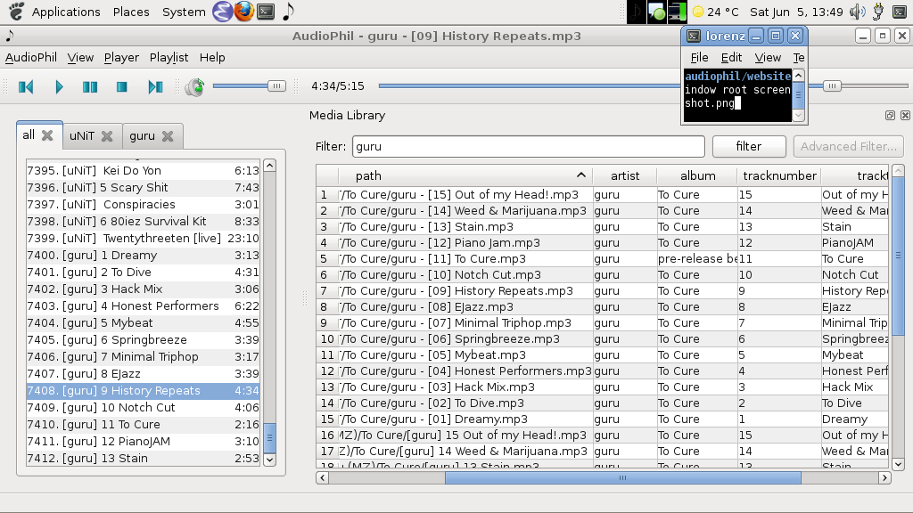
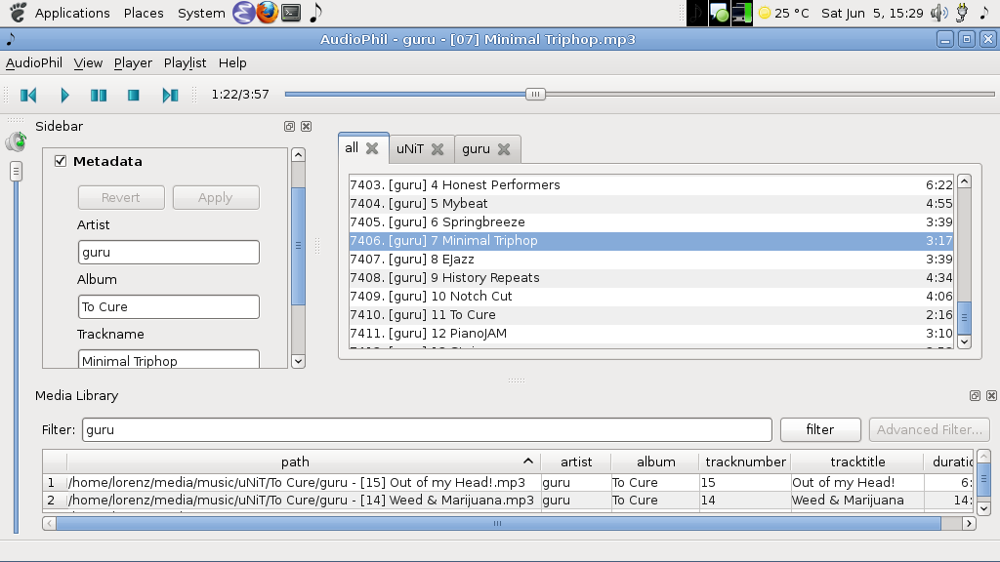
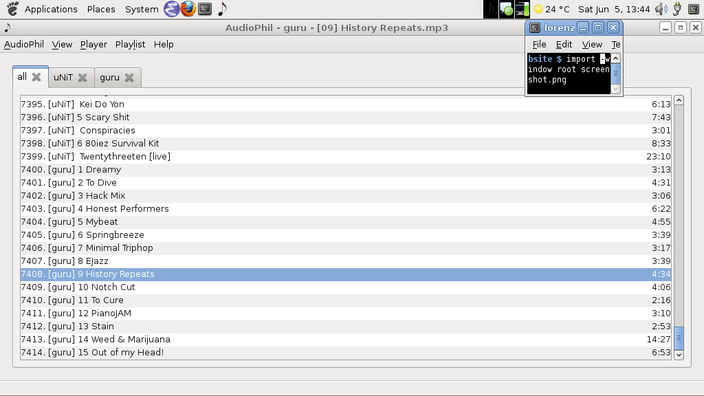
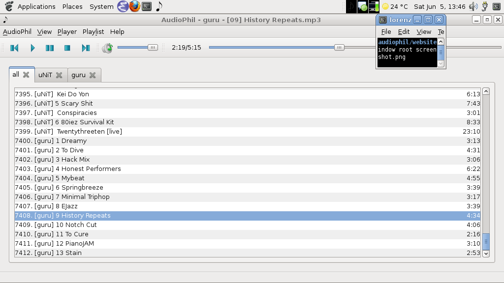

AudioPhil
Welcome to AudioPhil's Website.
AudioPhil is the no-fuzz, get-the-job-done music player you've been looking for.
It is free and open source software released under the 3-clause BSD-License. The latest version is 0.4.2 and is considered beta quality.
AudioPhil is developed by Lorenz Quack <don (at) amberfisharts.com>
Features
AudioPhil is not yet feature complete. Here are some of the features implemented so far.
- Tabbed Playlists (think browser tabs)
- Media Library
- System Tray Icon
Download
Currently there are only source releases available and can be found on the project's sourceforge page. AudioPhil has the following dependencies:
Screenshots
Everybody likes screenshots. These shots were taken on my netbook so the layout is a bit cramped.
|  Playlists and Media Library |  also showing the Sidebar; different layout. |
|  Minimal Layout only showing the Playlists |  Minimal Layout with controls |
Roadmap
This is an incomplete list of features I want to implement before the 1.0 release in no particular order
- Better support for external media (i.e. media that is not in the Media Library)
- Support for *.m3u, *.pls and *.xspf
- Simple metadata editing capabilities